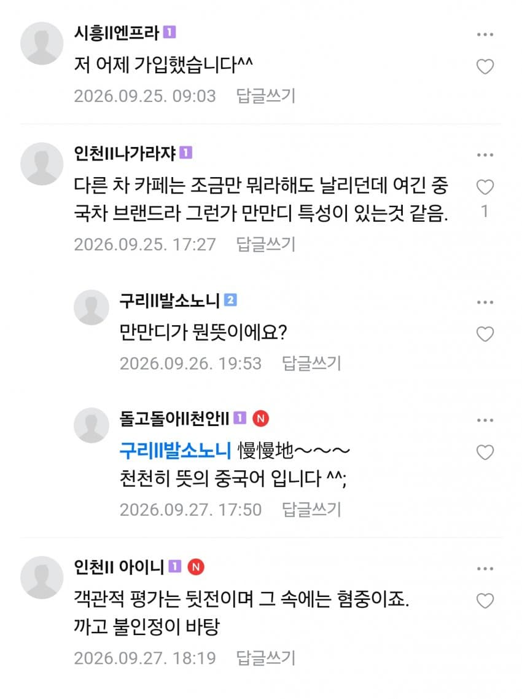

하오^^

하오^^
KGM은 중국차 베이스인게 문제가 아님
원랜디는 아는데
저런 차같지도 않은 병신같은 차도 카페가 있구나 ㅎ
Byd를 사는 놈들의 무서움은 당장 500만원 싼 전기차를 사기위해 앞으로의 수리비, 주변 인식, 안전, 전성비를 개무시하는 마치 트위따에서 남미놈들이랑 논리배틀하는 형국인거임
만만디 진심 첨 들어보는데 신기하네
BYD가 대체 어느정도길래
샤오미 화웨이폰 느낌보다도 별로임?
메운디는 아는데
만만디 한 3, 40년전 중국 개방되고 노다지 시장 기미가 보일락말락할때 꽌시처럼 참깨들 특성을 나타내는 단어라고 많이들 알았었음. 옛날에 출판된 중국정보서적보면 많이나옴
만만디 한자 틀렸다 ㅋㅋㅋ
慢慢的인데 알지도 못하고 쓰네
쨩!
KGM은 전 쌍용인데 중국산 베이스차라며?출시 예정작들 디자인들이 상당히 좋던데 중국베이스면 위험하겠지?